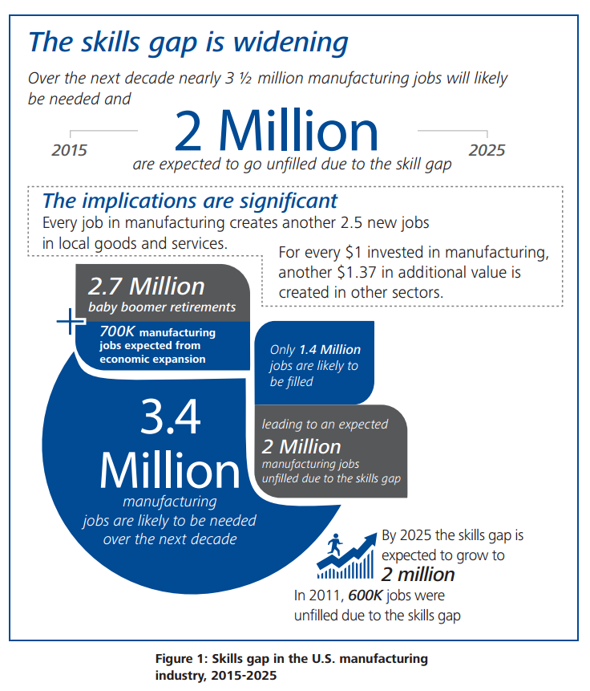

What is On Point?

On Point is a phone application that ensures manufacturers have access to a highly sought resource, ACT's
National Career Readiness Certificate (NCRC). Under the auspices of Nevada Industry Excellence (NVIE), On Point
is an effort associated with the Nevada Manufacturing Sector Council, striving to motivate a minimum of 40
manufacturers in Nevada to utilize the NCRC as a tool to hire a skilled workforce or promote from within by
the end of 2015.
Nevada’s manufacturing industry faces the problem of identifying and recruiting well versed qualified
employees. The ACT National Career Readiness Certificate (NCRC) is able to determine if a potential employee
is capable of the needed manufacturing skills that leaders are currently searching for. The ACT NCRC is used
to evaluate a person’s core problem-solving abilities. The ACT NCRC evaluates its users by giving a bronze,
silver, gold, or platinum certificate based on scores obtained through the NCRC WorkKeys® Assessments.
At this point in time, the leaders of the manufacturing industry are not using the ACT NCRC due to a lack
of awareness for this powerful tool. On Point is a mobile application that will educate manufacturing leaders
and encourage the use of the ACT NCRC.
On Point’s primary goal is to make the ACT NCRC an industry standard for determining an employee's skills and
abilities; thus, allowing industry leaders to effectively evaluate potential employee skills and ability to
learn. On Point will inform Nevada’s manufacturing industry of the benefits that the NCRC has to offer.
On Point will provide many useful tools such as practice tests and exam scheduling assistance that will
benefit the Nevada manufacturing industry as a whole.